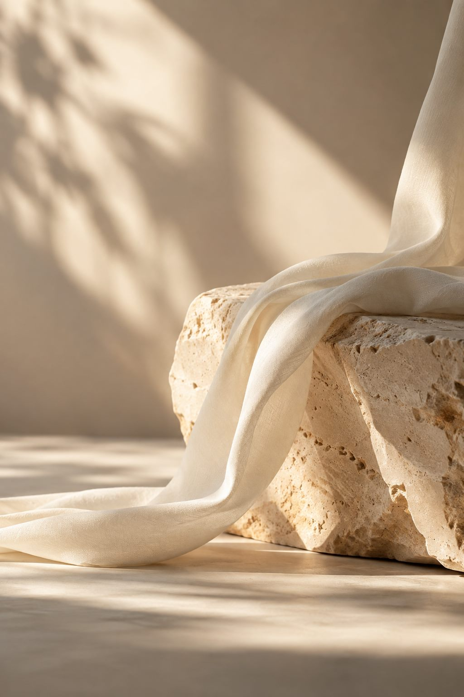

01 / 03
ESTÉTICA E HARMONIZAÇÃO
Facial
Um olhar atento para a pele, os traços e a expressão. A avaliação orienta opções de cuidado para quem deseja preservar a naturalidade e cuidar dos sinais do tempo.
Explorar procedimentosFACE CORPUS · PLANALTINA, DF
Tratamentos personalizados em estética facial, corporal e íntima, pensados para respeitar sua individualidade e cuidar de você de forma completa.
Desde 2022, um espaço para cuidar de histórias únicas.
MAIS DO QUE UM PROCEDIMENTO
Não existe uma única forma de se sentir bem. Cada pessoa chega com uma história, objetivos e necessidades próprios. Por isso, nosso cuidado começa com escuta e segue com uma avaliação individual.
O que buscamos é um caminho de cuidado que respeite você — com atenção aos detalhes, acolhimento e escolhas construídas em conjunto.
O QUE FAZEMOS
As áreas centrais da Face Corpus se encontram em um mesmo princípio: entender o que faz sentido para cada pessoa.
ESTÉTICA E HARMONIZAÇÃO
Um olhar atento para a pele, os traços e a expressão. A avaliação orienta opções de cuidado para quem deseja preservar a naturalidade e cuidar dos sinais do tempo.
Explorar procedimentosESTÉTICA E HARMONIZAÇÃO
Protocolos corporais definidos a partir de seus objetivos e das possibilidades identificadas em avaliação, incluindo cuidados com contorno, flacidez e bem-estar.
Explorar procedimentosCUIDADO COM DISCRIÇÃO
Atendimento para mulheres e homens, conduzido com respeito, privacidade e atenção às necessidades individuais. As possibilidades são conversadas durante a avaliação.
Entenda o atendimentoO primeiro passo é entender você.
Agendar avaliaçãoPROCEDIMENTOS
Estes são alguns dos atendimentos da clínica. A indicação de cada procedimento depende de avaliação profissional.
Um dos recursos considerados nos cuidados com a expressão facial, conforme avaliação.
Conversar sobre avaliaçãoParte das possibilidades de cuidado para a pele e seus processos de envelhecimento.
Conversar sobre avaliaçãoCuidado facial que parte da observação das necessidades de cada pele.
Conversar sobre avaliaçãoUma das possibilidades em estética corporal, planejada individualmente.
Conversar sobre avaliaçãoMomentos de cuidado corporal e bem-estar dentro de uma proposta personalizada.
Conversar sobre avaliaçãoAtendimento feminino e masculino, com discrição e avaliação individual.
Conversar sobre avaliaçãoHidratação facial · Peelings · Microagulhamento · Skinbooster · Preenchimento labial e facial · Tratamentos para manchas, acne e flacidez · Fios de PDO
Drenagem · Massoterapia · Protocolos para gordura localizada, flacidez e celulite · Protocolos corporais e de emagrecimento
Avaliação capilar · Cuidados com queda e couro cabeludo · Protocolos capilares · Tecnologias e procedimentos injetáveis, quando indicados
Cada protocolo e investimento são definidos após uma avaliação individual.
NOSSO JEITO DE CUIDAR
Beleza, tecnologia e cuidado caminham juntos quando as escolhas começam pela pessoa. Na Face Corpus, o plano de atendimento é construído a partir de uma conversa, não de uma solução pronta.
Um espaço para contar o que você busca e esclarecer dúvidas antes de decidir.
Características, objetivos e possibilidades são considerados em cada proposta.
Áreas diferentes da clínica ampliam as possibilidades de cuidado e bem-estar.
ALÉM DA ESTÉTICA
Outras áreas da Face Corpus acompanham diferentes momentos e necessidades da sua vida.
Emagrecimento, reeducação alimentar, performance e acompanhamento clínico. Atendimento presencial para todos os públicos.
Atendimento presencial para adultos, casais e público infantojuvenil.
Ortopédica, esportiva e pélvica, reabilitação, tratamentos para dor, pós-operatório e terapias manuais.
Avaliação e protocolos voltados às necessidades dos fios e do couro cabeludo.

O ESPAÇO
Na Face Corpus, o acolhimento faz parte do atendimento. A clínica recebe pacientes em Planaltina, no Distrito Federal, com horário marcado.
Do primeiro contato à conversa sobre o protocolo, queremos que cada etapa seja clara, respeitosa e próxima.
Veja como chegarSEU PRIMEIRO PASSO
Um processo simples para você entender as opções e tomar decisões com tranquilidade.
Fale com nossa equipe pelo WhatsApp para combinar um horário.
Compartilhe o que deseja cuidar e tire suas primeiras dúvidas.
Suas necessidades são consideradas de maneira individual.
Entenda as possibilidades indicadas para o seu caso.
SOBRE NÓS
A Face Corpus Clínica Integrada nasceu em março de 2022 e segue evoluindo para oferecer um cuidado mais próximo e acessível. Atendemos mulheres e homens com foco em estética facial, corporal e íntima, além de outras áreas de saúde e bem-estar.
Nosso propósito é contribuir para que cada pessoa se sinta mais confiante e bem consigo mesma, respeitando suas características, necessidades e objetivos.
PERGUNTAS FREQUENTES
Se quiser conversar sobre seu caso, nossa equipe está disponível pelo WhatsApp.
Falar com a Face CorpusSim. Grande parte dos tratamentos é definida após avaliação individual, considerando suas necessidades, expectativas e objetivos.
Entre em contato pelo WhatsApp. Nossa equipe ajuda com as dúvidas iniciais e combina o melhor horário disponível.
Sim. A Face Corpus atende o público feminino e masculino.
Não. A clínica também oferece nutrição, psicologia, fisioterapia e cuidados de saúde capilar.
Em Planaltina, DF, no Edifício Agenor Teixeira, ao lado da Rodoviária de Planaltina.
Das 09h às 18h, somente com horário marcado.
A avaliação profissional é o momento de entender suas necessidades e conversar sobre as possibilidades para o seu caso.
Sim. Os protocolos são definidos conforme a avaliação e as necessidades individuais.
VENHA NOS VISITAR
Um encontro marcado para cuidar de você com tempo e atenção.
09h às 18h
Somente com horário marcado.
FACE CORPUS CLÍNICA INTEGRADA
Agende uma avaliação e conheça, junto à nossa equipe, as possibilidades mais adequadas às suas necessidades e objetivos.
Agendar minha avaliação